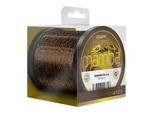
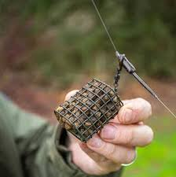

Wędkarstwo gruntowe to bardzo popularna forma łowienia ryb. Podstawą techniki jest nęcenie przed samym łowieniem oraz donęcanie. Przynętę podaje się na dnie. Musi tam spoczywać również ciężarek oraz przepona z haczykiem. Po zarzuceniu należy napiąć żyłkę, a wędkę umieścić w podpórce. W trakcie łowienia można wygodnie siedzieć nad wodą i czekać, aż ryba złapie przynętę. Wędkowanie gruntowe na feeder jest bardzo uniwersalne, polega na zastosowaniu koszyczka zanętowego i drgającej szczytówki lub bombki, zawieszonej pomiędzy przelotkami. Pozwala na łowienie zarówno małych płotek, leszczy, jak i drapieżnych węgorzy czy szczupaków.
Jaki zestaw do wędkowania gruntowego?
Standardowe wędki mają długość od 3,5 do 4,5 metra. Można wybierać różne akcje wędziska, np. paraboliczne, półparaboliczne albo szczytowe. Dla początkujących amatorów wędkowania gruntowego polecane są wędki o akcji parabolicznej, które pomogą wyrzucić zestaw odpowiednio daleko. Najbardziej popularnymi wędziskami jest picker oraz feeder, używany do łowienia większych okazów, tj. węgorz, szczupak czy sandacz.
W metodzie gruntowej sprawdzą się kołowrotki o rozmiarze od 3000 do 6000, na których zmieści się 200–250 metrów żyłki. Ważna jest praca kołowrotka, która powinna być płynna.
 Żyłki przeznaczane do pickera powinny mieć grubość 0,16-0,20 mm, a przeznaczone do feedera grubość 0,22-0,30 mm. Do metody gruntowej zalecane są żyłko mało rozciągliwe.

Rurki antysplątaniowe zapobiegają splątaniu się zestawu.
Koszyczki zanętowe montuje się w odległości ok. 30-45 cm od haczyka. Są wypełnione zanętą, przeznaczaną do łowienia określonych gatunków ryb. W wodach stojących można zastosować koszyczki otwarte, a w rzekach – zamknięte, kwadratowe lub trójkątne, z dociążeniem do 100 g.